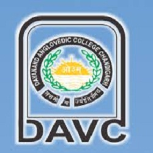

D.A.V. COLLEGE SECTOR -10 CHANDIGARH


ABOUT US:-
The college was founded in 1959, when the city of Chandigarh was in its infancy. The college belongs to the family of DAV institutions, founded by Mahatma Hans Raj, and inspired by the visionary Swami Dayanand Saraswati, the doyen of the Arya Samaj. The DAV movement, which started in 1886, aims to develop a scientific approach among the students, coupled with an understanding of their roots in the ancient Vedic Culture.
|
|
|---|